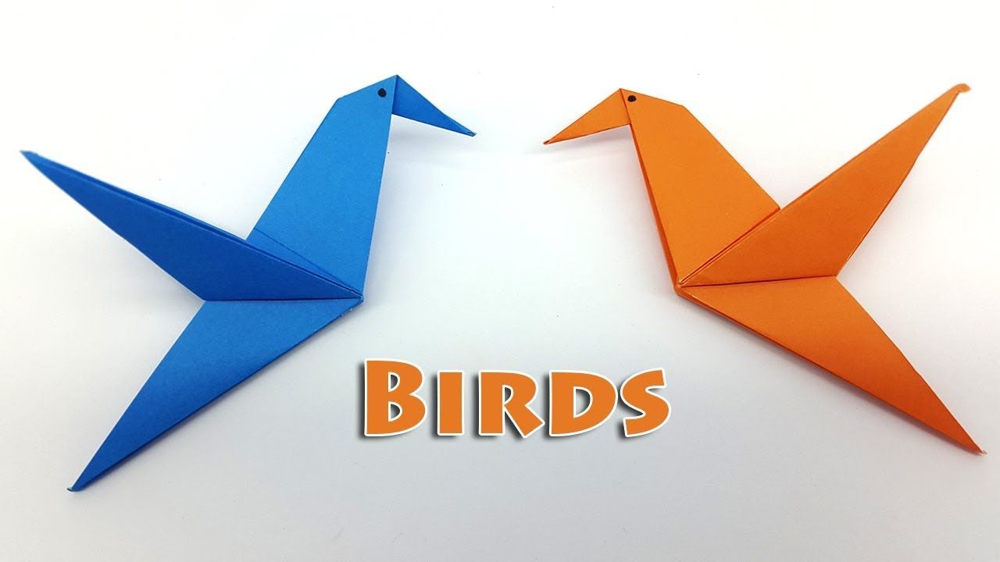
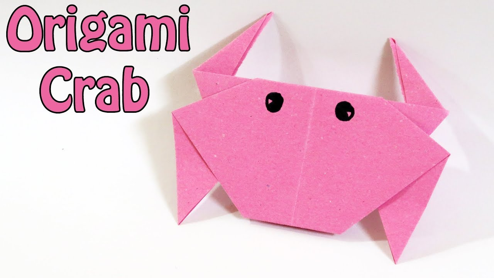

_BUTTERFLY_
THEY EAT POOP AND DRINK TEARS.
THEY USE ANTS AS BABYSITTERS.
THEY USE FALSE HEADS TO TRICK PREDATORS.
_BIRDS_
BIRDS HAVE FEATHERS, WINGS, LAY EGGS AND ARE WARM BLOODED.
THERE ARE AROUND 10000 DIFFERENT SPECIES OF BIRDS WORLDWIDE.
THE OSTRICH IS THE LARGEST BIRD IN THE WORLD.
_FROG_
FROGS DON'T NEED TO DRINK WATER AS THEY ABSORB IT THROUGH THEIR SKIN.
A FROG'S CALL IS UNIQUE TO ITS SPECIES, AND SOME FROG CALLS CAN BE HEARD UP TO A MILE AWAY.
SOME FROGS CAN JUMP OVER 20 TIMES THEIR OWN BODY LENGTH; THAT IS LIKE A HUMAN JUMPING 30M.
_CRAB_
THE JAPANESE SPIDER CRAB IS THE BIGGEST, MEASURING ABOUT 12 FEET BETWEEN ITS CLAWS.
MOST SPECIES LIVE IN COASTAL AREAS OF SALTY, FRESH OR BRACKISH WATER .
THERE ARE MORE THAN 4,500 SPECIES OF CRABS.